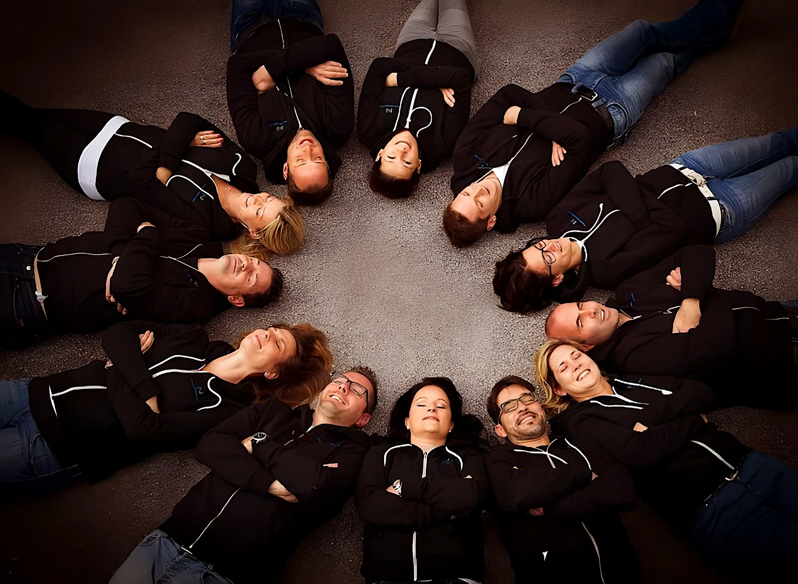
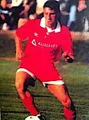
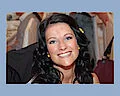
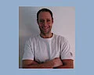
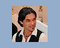
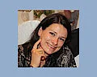

Über uns
Ein Freundeskreis aus Völs, der seit 2012 Menschen in Not unterstützt – im Andenken an unseren Freund Kurt Larcher.

Vom Gedenkturnier zum Verein.
2011 organisierten Freunde des verstorbenen Kurt Larcher erstmals das „Kurt Larcher Gedenkturnier“. Die Einnahmen gingen zur Gänze an den Sozialsprengel Völs. So erfüllte sich der Wunsch der Organisatoren, im Sinne von Kurt Larcher einer oder mehreren sozial schwachen Familien zu helfen.
Die Veranstaltung war ein so großer Erfolg, dass sich die Arbeit der Vereinsgründer reich gelohnt hat. Daraus entstand der Gedanke, einen Verein zu gründen, um weiterhin Gutes tun zu können.
So wurde 2012 der Verein Freunde schenken Freude gegründet. Wir hoffen auf viele Mitglieder, die uns bei unseren Veranstaltungen unterstützen, daran teilnehmen und uns beim „Freude schenken“ begleiten.

Kurt Larcher
22. 11. 1974 – 21. 3. 2006
Das Schicksal annehmen, ohne zu jammern, mit großer Stärke durchs Leben gehen und helfen, wo man kann.
Kurt Larcher
Kurti, geboren am 22. November 1974, war schon in jungen Jahren ein begeisterter Fußballer. Er war einer unserer wirklich guten Freunde, mit dem wir so manche lustige Geschichte erleben durften.
Schon relativ früh in seinem Leben ereilte ihn das Schicksal einer Autoimmunerkrankung: Morbus Wegener (Wegenersche Granulomatose). Tapfer und ohne großes Jammern nahm er seine Krankheit an und lebte sein Leben einfach weiter.
Seine Liebe galt dem Fußball. Irgendwann konnte er ihn krankheitsbedingt nicht mehr selbst ausüben, doch er fand einen anderen Weg, den Fußball in seinem Leben zu halten: Er gründete und organisierte die Kurt Larcher Fußballcamps für kleine Fußballer und setzte sich so für den Nachwuchs ein.
Leider bremste die sehr seltene und vor allem tückische Krankheit Kurtis Schaffen und Leben aus. Sein Zustand verschlechterte sich zusehends, und sein tapferer Kampf endete am 21. März 2006.
Nach seinem Tod rief seine Familie das Kurt Larcher Gedenkturnier ins Leben, das bis 2010 erfolgreich stattfand. Der Erlös dieser Turniere ging an die Forschung zur Wegenerschen Granulomatose.
Da wir bei den Kurt Larcher Gedenkturnieren immer mit vollem Einsatz dabei waren, war es uns ein Anliegen, das Gedenkturnier weiterzuführen. Wir wollen, dass Kurti nicht vergessen wird, und wir wollen Menschen helfen, die vom Schicksal gebeutelt wurden.
Kurti ist uns dabei immer ein Vorbild: das Schicksal annehmen, ohne zu jammern, mit großer Stärke durchs Leben gehen und helfen, wo man kann.
Kurt Larcher – unvergessen.
Die Menschen hinter dem Verein.
Peter Dobeiniger
Obmann

Jasmina Auer
Schriftführerin

Daniel Kappacher
Veranstaltungsreferent
Michael Seebacher
Rechnungsprüfer

Christopher Walder
Obmann-Stellvertreter

Martina Kappacher
Schriftführerin-Stellvertreterin
Thomas Auer
Rechnungsprüfer-Stellvertreter